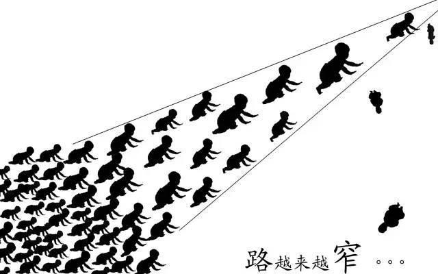
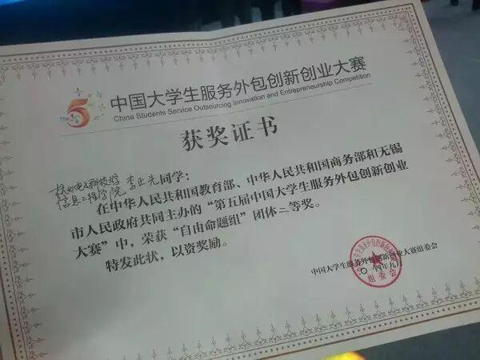
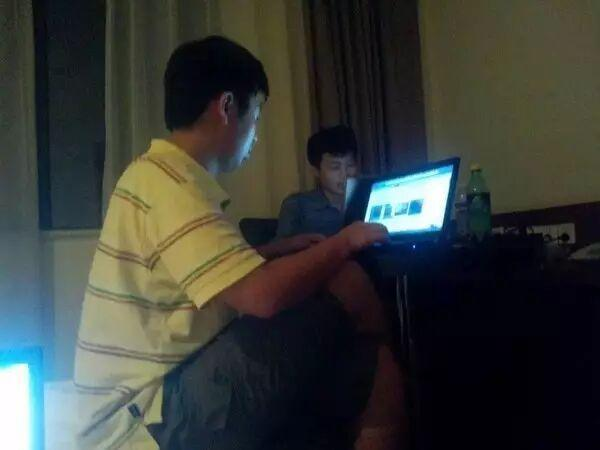
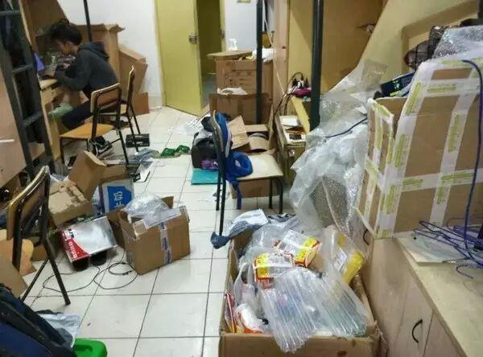
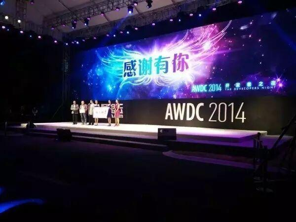

使用小程序
导读在知乎上看到这样一段话：
“渣学校意味着渣教学，渣教学意味着渣学历，渣学历意味着渣就业，就算以后考了研究生，也有可能因为你的第一学历不过关而被拒之门外。”
真是这样？
二本大学的环境有那么不堪吗？
在Jzc Alex看来，一所不是那么优秀的高校，最可怕的就是给你带来一种温水煮青蛙的安逸感。
在这类学校里，你能找到聪明的同学，能找到用功读书的同学，但就是很难找到比你聪明五倍但比你努力十倍的人。
迟早有一天，等你真正进入社会的时候，你会发现那些有吸引力的工作岗位、那些能吸引风投的创业机会、那些留给下一辈配置社会财富的渠道，已经被这类人牢牢占据了。
当然，慢慢你还会发现，这类人往往情商高、涵养好、家里也有背景。
噢，对了，恰好还比你帅。
然而这些人，你在你的大学里，一个都没见过。
这个时候你才会发现，自己被大学耍了。
但是你已经很难去弥补了。就算你还能重新鼓起勇气上路，但还能够给你留下的路，已经很窄很窄了。
How terrified.

在波小蟹看来：层次相对较低的环境，最可怕的地方不在于资源匮乏，而在于在最该开阔眼界的年龄限制了人的眼界，在最该严格要求自己的阶段降低了要求的标准，而且这些影响是潜移默化、根深蒂固的，最终“强者愈强、弱者愈弱”。
在一些二本三本学校里，那些实际上能力绝不算出众的人，因为矮子里面拔将军的缘故，也会被树立为榜样。
同时，学校又热衷一轮又一轮地宣传和神话这些人来鼓吹自己的办学成绩，而且越是层次低，学校的举动越夸张，从挂红榜到开专场报告会。
于是，初入大学的你，缺乏对大学生活的基本了解和判断能力，你会不由自主地认为：
哇，过六级好厉害噢——于是你大学四年连四级也没过；
哇，课程好难我一定会挂 ——于是你大学四年确实挂了一片；
哇，过会计从业好厉害哦——于是大学四年你连个从业也没考出来；
哇，考上211研究生好厉害——于是……
可你不知道在另一所大学中（或许就是你的隔壁），你的同龄人（或许曾经是你的同桌），在他们的生活里：
其实，不过六级是难以启齿的事情，大多数人的目标是550乃至600；
其实，“要挂科了”是用来自黑的，期末考试绝大多数的人是奔着4.0的绩点去考的，结果你们都信了；
其实，“什么都没学会”也是用来自黑的，于是被很多人拿来作为名牌大学无用的主要论据；
其实，各种从业考试是有人能考满分的，大家关注的是司考、cpa、cfa；
其实，研究生学校的目标是海外名校，要么也是清北复交，再不济也得是985……
也许你们高考前的水平和能力并没有本质性的差别，普通985高校和正经二本能差多少分？根本不是什么天才和常人的差别，考上985的人，若是高考手多抖两下真可能连一本线都过不了。
可是四年的耳濡目染，让你给自己的人生加了一个不可逾越的透明天花板，差距就不是高考的那些分数了。
是因为这四年你啥都没学会，就学会了瞻前顾后，很多事情还没了解和尝试就已经预判，因为你扒拉扒拉周围的人，好像做到这些事情就是大神了，而我不是大神，所以我一准做不到，周围的环境限制了你的眼界、降低了你的标准。
于是久而久之，你们的差别已经变成了质的差别。
211大学生就可以“高枕无忧”了？
韩秋生是一个211学校的学生。他所学的专业，就业率只有一半，以后究竟要怎么办才能去竞争，去适应这个社会？
清华北大的学生也好，常春藤的学生也好，各大洲的名牌大学的学生也好，真的数不过来。他们的生活层次、眼界、实力、经历，都是当前的他远不能及的。
所以，他也会有些自卑。有时也在想，未来的出路在哪里？刚来学校的第一个月，觉得很新鲜，但是第二个月后，就慢慢变成失望。尤其是当他看到高中、初中同学都在晒他们的大学时，心里落差很大。
但是，直到有一天。
“就在寒酸的一教，一个冬天的晚上，我去学生会开完例会，已经快接近十点半了。经过我们班教室的时候，看到我们班副班长在那里自习。她是我们专业年级第一。”
就是这样。相同的条件，当你在消磨着不打眼的时间的时候，有的人正在奋斗不止。当你沉迷于网游与交际时，有的人正在自我完善。
你以为你“沦落”到一个“理应堕落”的地方，有的人却正在看看抓住一分一秒，不断提升。
抱怨和祈求同情，make no sense.你要做的，就是不停地奋斗。你只不过是走到了一条叉路。奋斗，或者放弃。只有当你放弃了，才是绝路，那个时候，再来找出路吧。
非985大学生出路在哪？
直接列举个例子，你就会明白了。
杭电信工李正先：多实践，多积攒人脉
我大一的时候和小伙伴一起报名了电子商务竞赛，当然了，我当时除了C语言什么都不会，于是我花了半个学期，网上找各种资料，后来看视频，一点一点学会了用JAVA写网站，最终我们拿到了电商省赛的一等奖。
后来，我参加了全国服务外包创新创业大赛，我们花了一个暑假的时间，潜心钻研JAVA WEB。最终拿到了国赛二等奖。

我们拿了电商省赛一等奖，学校网站上写：创历史性记录。我们拿了外包国赛二等奖，也是创纪录。所以说，我现在也不觉得三本有什么不好，因为你可以让你的学校，变得更好。
这次与我们比赛的有清华的、交大的，等等等等高等学府，我们的创意，丝毫不比他们差，代码也完全不输于他们。这次比赛，我学到了，原来，所谓的985、211，也没那么可怕。

图为熬夜写代码，因为我发现，一般半夜写代码，最有感觉。
之后，我们就陆陆续续开始接一些外包的项目来做，然后也渐渐有了一点小钱，这没什么，自己辛苦挣的钱，花起来也心安理得。做外包是很累，但很多都是课堂上学不到的宝贵经验。
我觉得大学比较重要的就是，多去实践，不要怕，反正也没什么损失，与其在寝室里打lol，还不如上网找找可以干的活。同时，我也在做一些其他的事情赚钱，比如卖电脑。我卖电脑也不是为了赚钱，主要还是积攒人脉。

大学里，还一定要记得，多出门走走，多认识人，广交朋友，相信我，毕业时，你的人脉是你的最尖利的一把利器。
我们去了阿里云开发者大会，可以和阿里的工程师有交流的机会，我们甚至还和阿里的CTO王坚王总有交流。在阿里云的那两天，结识了很多超级厉害的人物呀。

我们辅导员问我，以后打算怎么办，我说，我想去阿里巴巴工作~从小就有~以前是个梦想，跟考清华还是考北大一样，就是说说；但是现在走着走着，我发现我可以看到我们的目标了，再努力再努力，万一成功了呢？
学校好不好不是关键，我觉得大学只是一个地方，有些人在985、211照样天天游戏，有些人在差一点的学校，照样可以成为很牛的人物。加油！
信息部/张晋鹏